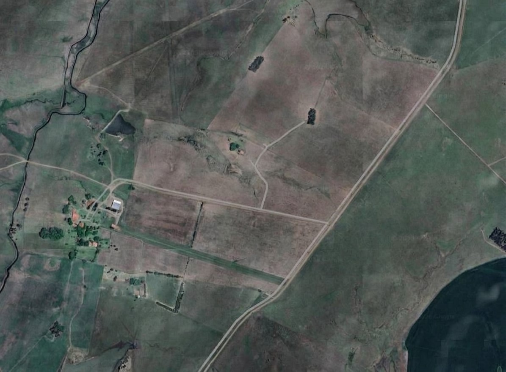

Painel do Técnico Agrícola
Registros de campo, ocorrências e acompanhamento dos sensores dos talhões.
Tarefas do Dia
Monitoramento dos Talhões
Mapa dos Talhões
Selecione um talhão para consultar a situação em campo.

Normal
Atenção
Crítico
Selecionado
Normal
Detalhes: Talhão A1
Produto--
Variedade--
Área--
Tipo de solo--
Data de plantio--
Previsão de colheita--
Sensor principal--
Temperatura configurada--
Temperatura atual--
Umidade atual--
Prioridade de campo--
Métricas dos Sensores
Sensores
| Sensor | Talhão | Status | Última comunicação | Última leitura |
|---|
Alertas Importantes
Campo
Novo registro de campo
Escolha o tipo de registro e preencha os campos. Tudo o que for lançado aqui entra automaticamente no relatório diário abaixo.
Relatório
Relatório diário de campo
O texto é montado automaticamente com as inspeções, ocorrências e problemas de sensor do dia, a telemetria dos sensores e a situação dos talhões. Revise, ajuste se necessário e envie.
Histórico de
registros
| Data | Tipo | Talhão | Sensor | Detalhes | Observações |
|---|
Telemetria diária — médias por talhão
| Data | Talhão | Temperatura (°C) | Umidade do ar (%) | Umidade do solo (%) |
|---|
ThingSpeak / ESP32 — clima e telemetria
Carregando canal ThingSpeak...
| Data/hora | Temperatura | Umidade do ar | Umidade do solo |
|---|---|---|---|
| Carregando... | |||
Histórico diário de
telemetria por talhão
| Data | Métrica | Média | Mínimo | Máximo | Leituras |
|---|
Clima mensal
Médias mensais das leituras dos sensores.
Consolidado mensal dos
últimos 12 meses
| Mês | Talhão · métrica | Média | Mínimo | Máximo | Leituras |
|---|